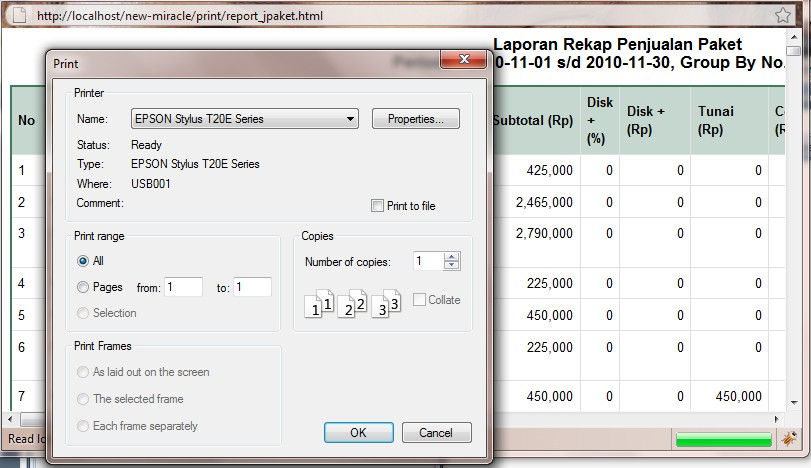
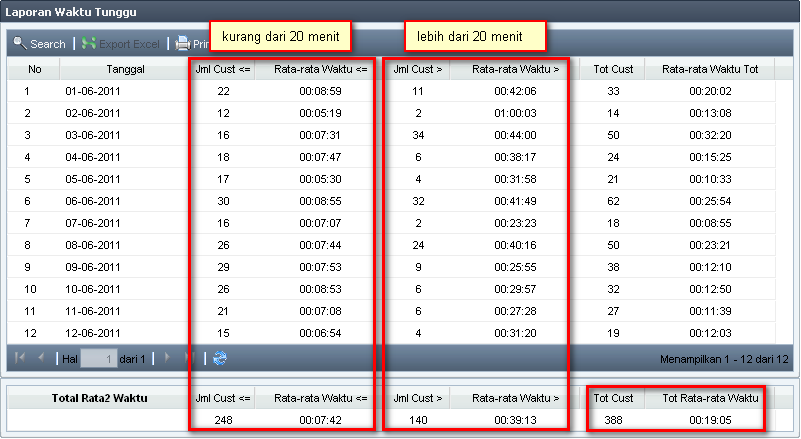
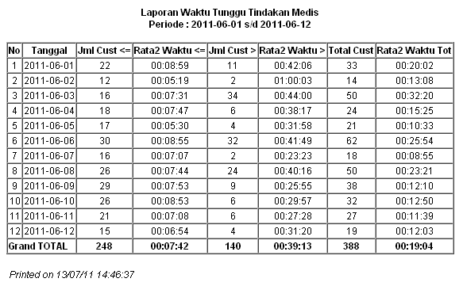

Laporan Waktu Tunggu
Laporan Waktu Tunggu digunakan untuk melihat jumlah rata-rata waktu tunggu per periode yang diinginkan.
Definisi Waktu Tunggu adalah waktu ketika dilakukan tindakan (suster / terapis mengganti status menjadi "tindakan") dikurangi waktu customer datang (CRO mengganti status menjadi "datang").
Note:
- Khusus Miracle Lombok & MTA, Laporan Waktu Tunggu ini tidak bisa menghasilkan nilai, karena di klinik ybs tidak dilakukan modul Tindakan.
Laporan ini dapat diakses melalui menu Laporan --> Laporan Waktu Tunggu
Berikut merupakan tampilan halaman pencarian waktu tunggu
- Pillih Periode, lama Waktu Tunggu, dan Group By (pengelompokan) yang diinginkan, lalu klik Search

- Contoh Hasil Pencarian dari Laporan Waktu Tunggu periode 1 - 12 Juni 2011, dengan batas waktu 20 menit, dan dikelompokkan berdasarkan kelompok 'Medis'

Dapat dilihat dari hasil pencarian diatas, pada tanggal 1 Juni 2011:
- Jumlah Customer dengan waktu tunggu kurang & sama dengan 20 menit sebanyak 22 orang, dengan rata-rata lama waktu tunggu 00:08:59
- Jumlah Customer dengan waktu tunggu lebih dari 20 menit sebanyak 11 orang, dengan rata-rata lama waktu tunggu 00:42:06
- Total keseluruhan Customer sebanyak 33 orang, dengan rata-rata lama waktu tunggu total 00:20:02
Sedangkan total keseluruhan customer dari tanggal 1 - 12 Juni 2011, adalah sebanyak 388 orang, dengan total rata-rata waktu tunggu 00:19:05 (selama 12 hari)
Note:
Total Customer di sini adalah mungkin berbeda dengan jumlah kunjungan, karena perhitungan total customer di sini adalah berdasarkan dari appointment yang masuk, sedangkan jumlah kunjungan adalah berdasarkan transaksi / faktur yang terjadi.
- Klik tombol Print jika ingin mencetak Laporan Waktu Tunggu

Note:
- Sesuai definisi waktu tunggu di atas, Waktu Tunggu adalah dihitung dari selisih waktu antara waktu "datang" dan waktu "tindakan", jadi jika salah satu waktu bernilai kosong, maka waktu tunggu dianggap tidak ada sehingga customer pun tidak ikut dihitung.
- Dapat dilihat seperti contoh pada Tindakan Medis di bawah, kasus nomor 2 dan 3 tidak memiliki waktu tunggu, sehingga customer pun tidak dimasukkan dalam perhitungan jumlah customer. Sedangkan kasus nomor 1 adalah kasus normal yang memiliki waktu tunggu dan akan dihitung dalam proses perhitungan waktu tunggu
(last updated on 14 July 2011)
Copyright © 2010, IT Department of Miracle Aesthetic Clinic Group
Created with the Freeware Edition of HelpNDoc: Easily create CHM Help documents